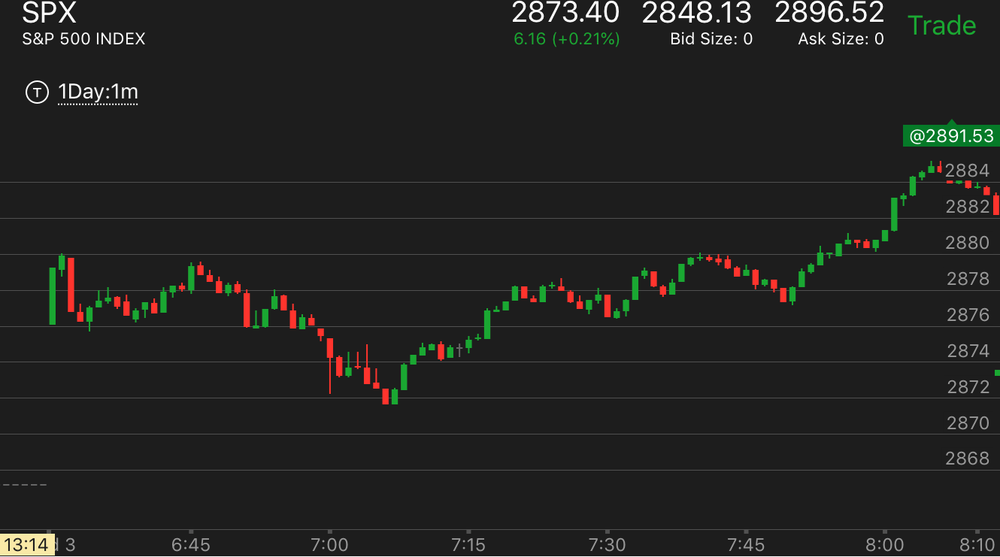

判断大盘的趋势是持续还是反转
- 反转走势，一定要有很短时间内的两段走势。或者三段。这个其实就是5浪走势的来源。
- 如果下跌或者上涨前，大盘走平一段时间。这样的走势容易反转。只要下跌或者上涨后，短时间出现了两段，或者三段
就会反转。
- 如果是缓慢下跌/上涨。或者冲高大跌，走低大涨。那么这样的走势会持续运动。很难反转。
大跌后，快速反弹走势的对比
下跌前出现了一个一个深井走势。
下跌前冲高。
下跌前冲高。:
TOP
下跌前冲高，让人觉得很强，结果大跌。做空的人也会因为很强而平仓。
它下来后，人会觉得它会再次上去，而做多。结果它不会回调。

图示：开盘后，冲高。然后大跌。创新低。反弹后填补空间，大跌。
这个走势冲高大跌，所以会持续下跌。不会反转。
下跌前出现了一个一个深井走势。:
TOP
深井走势使得大盘在大跌前是个走平的状态。然后大跌。形成了陷阱大跌的样子。
从反直觉的角度看，它下跌后，快速拉回，显得很强。而开始大跌后，跌破前面的低点，让人意外。

图示：7：50大跌前，大盘出现了一个深井走势。这样让大盘成为一个走平的状态。
一开盘下跌算第一浪，反弹后，7点算第二浪。要看到7：00这个下跌，速度虽然很快。
但是其实还不如第一浪下跌速度快。这样就不是底部。未来一定会低于这个点。它反弹后，走平很久。
7：50再次下跌。这次破新低，在8：00走平一次，然后再次下跌。因为前面有了第一浪。那么这个有了这样的转折，就是第二浪了。
这样的下跌结束了。虽然它看起来不是很激烈。

图示： 6：45下跌前，也出现了深井走势。6:45开始下跌。相当于从一个走平的走势下跌。
下跌幅度不大。但是有了三个转折。说明就是底部了。另外下跌前的走平非常重要。
6：45下跌前，大盘处于走平状态，而不是冲高大跌，也不是缓慢下跌。这样的走势更容易到达底部。有些类似陷阱大跌的走势。
7：10反弹后，第一浪幅度比较大，速度很快。但是其实也就是和最后一个台阶一样高。然后走平。这样速度就变得慢了。
大跌后，快速反弹走势的对比:
TOP
1. 关键在于是否见底。而下跌期间，出现两个以上的反弹，就是属于底部加速，那么就是见底了。

图示：下跌前，有个冲高的动作。这样的下跌会持续前进。10：30下跌后，
只有一个走平。它反弹的时候，第一浪就速度很快，而且幅度超过了第一个台阶，
而且后面一直在这个高点徘徊。如果它回撤，那么这个会涨。而这个没有回撤。而是在高点徘徊。

图示：这个下跌前，没有明显的冲高。10：20只有很小的冲高的动作，10：50它大跌。基本就是一个走平的走势后，突然大跌。
这样类似陷阱大跌。
看它下跌的样子。出现了走低，反弹不到高点，再次走低。
而且连续两次。最后一次还出现了加速。这样就是一个底部了。它反弹的时候，第一浪看起来很快，但是和第一个台阶一样高，然后走平。后来走平很久。这样平均来看
速度很慢。最后会大涨。

图示：开盘后，下跌以前冲高，下跌的时候，只有两段走势。似乎是一个升势。它的反弹速度也不快。说明这个不能当作一个唯一的指标。
它反弹的时候，幅度很大。接近前面高点，然后走平。这个分析困难。只能说，如果下跌只有两段。不一定就是一个跌势的结束，如果反向走势幅度很大。而且高位徘徊，
那么就不是升势，而是跌势了。如果反向走势冲高后，立刻拉回在地位徘徊，那么就是升势。